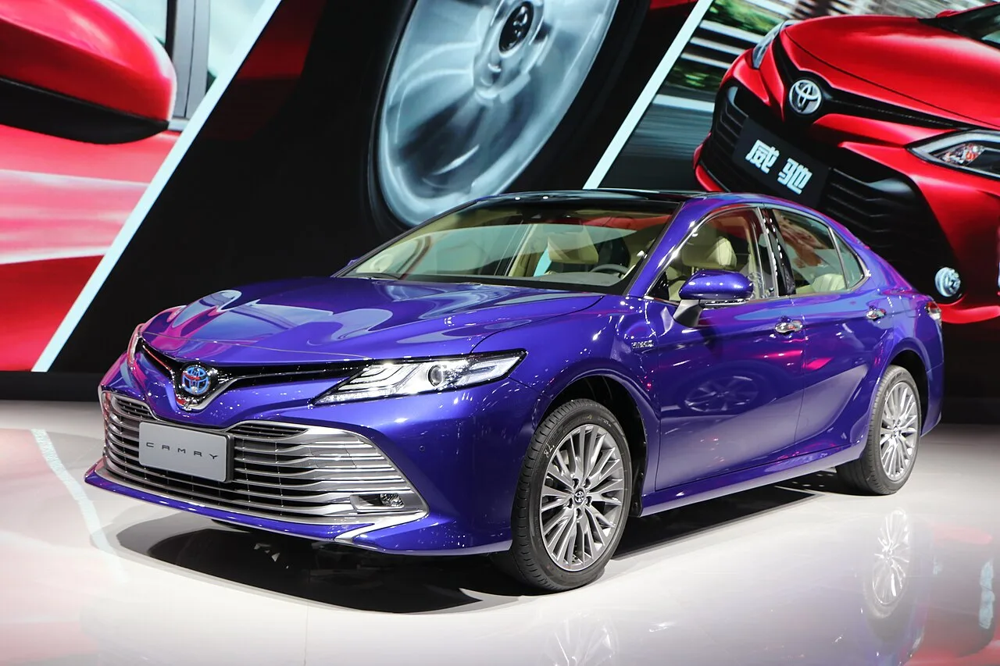
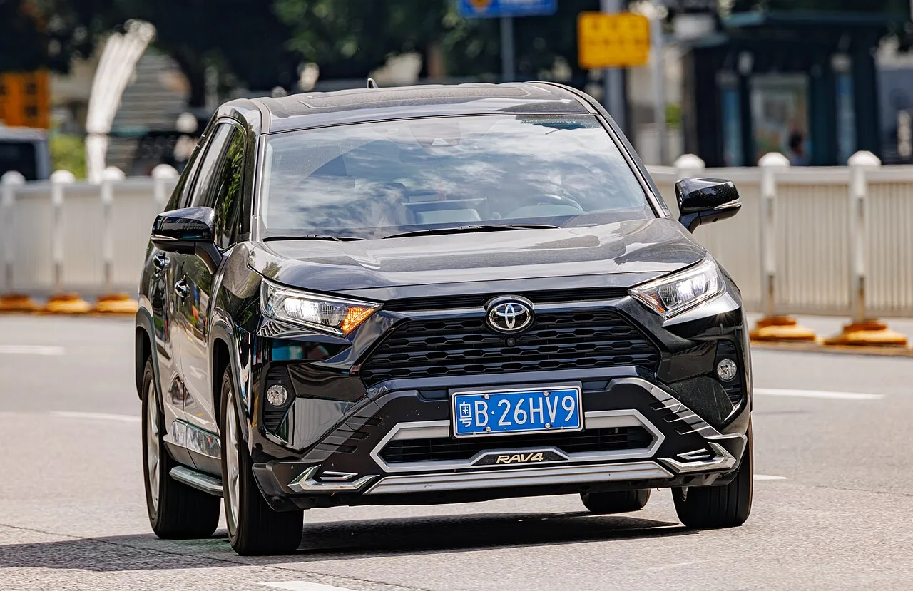
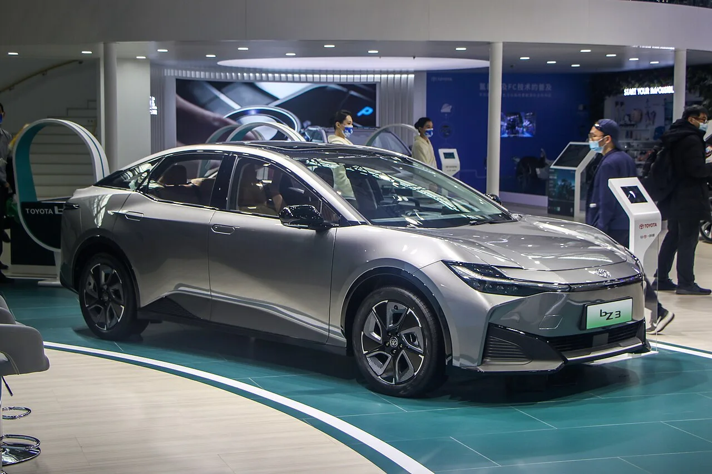
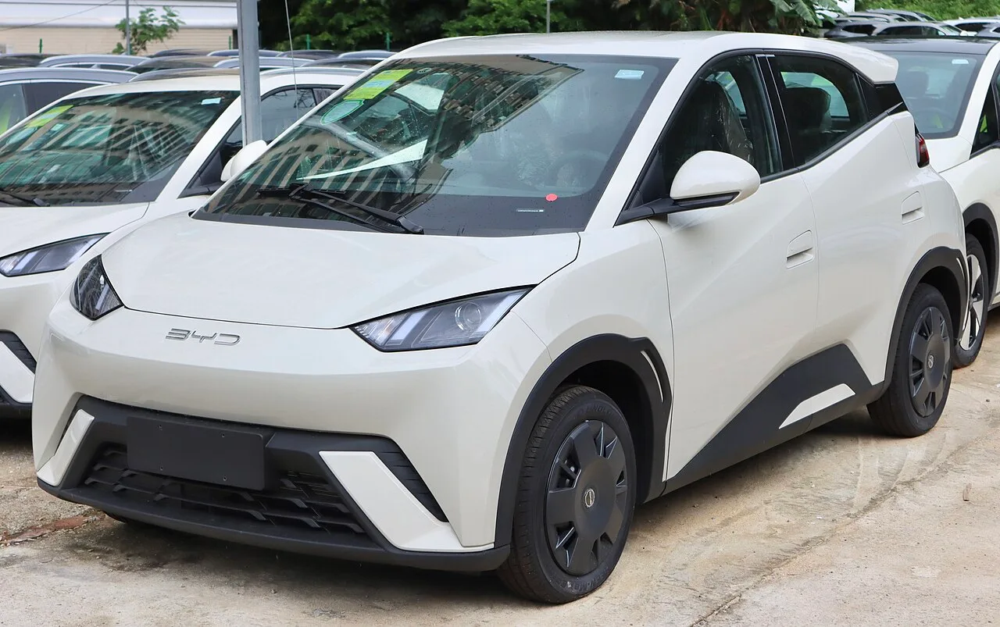

▲ 광치도요타(GAC Toyota)가 판매해온 캠리 하이브리드 — 도요타의 중국 두 합작사가 하나로 재편되고 있다 ⓒ Nissangeniss / Wikimedia Commons (CC BY-SA 4.0)
중국 국유 자동차그룹 두 곳이 도요타를 사이에 두고 지분 구조를 다시 짠다. 2026년 9월 14일, 광저우자동차그룹(GAC)은 이차자동차그룹(FAW)과 자산 재편에 관한 의향서를 체결했다고 발표했다. 골자는 GAC가 신주(A주)를 발행해 자금을 조달하고, FAW가 보유한 FAW도요타 지분 일부를 사들이는 대신 FAW가 GAC의 2대 주주로 올라서는 구조다.
표면적으로는 두 중국 국유기업 간의 지분 교환처럼 보이지만, 실질적인 파장은 도요타의 중국 사업 전체를 향한다. 도요타는 1위 GAC도요타(광저우)와 2위 FAW도요타(톈진)라는 두 개의 별도 합작사를 20여 년간 운영해왔는데, 이번 재편을 계기로 두 조직을 하나의 판매·서비스 체제로 묶으려 하고 있다.
1. 무슨 일이 있었나 — GAC-FAW 지분 재편의 구조
GAC도요타와 FAW도요타는 각각 2004년, 2000년에 설립된 별도의 50대50 합작사다. GAC도요타는 광저우, FAW도요타는 톈진에 본사를 두고 캠리·RAV4 등 겹치는 차종을 각자 따로 생산·판매해왔다.
| 구분 | GAC도요타(광치도요타) | FAW도요타(이치도요타) |
|---|---|---|
| 설립연도 | 2004년 | 2000년 |
| 본사 | 광저우(광둥성) | 톈진 |
| 중국 파트너 | 광저우자동차그룹(GAC) | 이차자동차그룹(FAW) |
| 지분 구조(재편 전) | 도요타 50% : GAC 50% | 도요타 50% : FAW 50% |
이번 의향서에 따르면 GAC는 신주를 발행해 조달한 자금으로 FAW가 보유한 FAW도요타 지분 일부를 사들이고, 그 대가로 FAW가 GAC 그룹의 2대 주주로 올라선다. 다만 로이터·CarNewsChina·SCMP·이차이(Yicai) 등 주요 외신들은 이번 거래를 아직 "의향서" 단계로 전하며, FAW가 확보할 정확한 지분율(%)이나 GAC공업그룹의 기존 지분 희석 폭까지는 공식적으로 공개되지 않았다고 보도했다. GAC 역시 거래 대상 자산과 금액을 공식 발표하지 않은 상태다.
📍 도요타 지분은 그대로, 중국 측 지분만 재배분
알려진 구조에서 도요타는 통합 이후에도 신설 법인에서 지분 50%를 유지하는 것으로 전해진다. 가스구(Gasgoo)는 신설 통합 판매법인의 지분 구조로 도요타 50%, GAC·FAW가 각각 25%씩 보유하는 방안이 거론되고 있다고 전했다. 즉 이번 재편은 도요타의 지분율을 바꾸는 거래라기보다는, FAW와 GAC라는 두 중국 파트너의 지분을 서로 맞바꿔 엮는 구조에 가깝다. 가스구 산하 연구기관은 이를 두고 "합병이 아니라 지분 투자"로 규정하기도 했다.

▲ RAV4는 GAC도요타와 FAW도요타가 각각 별도 버전으로 생산해온 대표 겹침 차종 중 하나다 ⓒ Dinkun Chen / Wikimedia Commons (CC BY-SA 4.0)
거래의 배경과 지분 구조에 대한 상세 보도는 아래에서 확인할 수 있다. Just Auto 원문 기사 바로가기
2. 왜 지금인가 — 7%까지 떨어진 승용차 판매 비중
이번 재편의 직접적인 배경은 실적 악화다. 두 합작사의 판매는 최근 몇 년간 뚜렷한 하락세를 그려왔다. 2026년 1~8월 기준 로이터 분석 보도는 GAC도요타 판매를 전년 대비 약 24% 급감한 37만 5천 대로 집계했다. 다만 가스구(Gasgoo) 등 업계 매체는 같은 기간 GAC도요타 판매를 44만 7천 대(약 10% 감소)로 집계해, 소매 판매·도매 출하 등 집계 기준에 따라 수치 차이가 크게 나타난다. 반면 FAW도요타는 매체 간 편차 없이 비교적 일관되게 약 26%대 감소한 37만 9천 대(시장점유율 약 3.2%) 수준으로 집계됐다.
✅ 도요타 중국 합작사 부진의 단면
· 두 합작사의 올해 1~8월 승용차 판매 비중 합계는 약 7%까지 축소된 것으로 전해짐
· FAW도요타의 시장점유율은 약 3.2%까지 하락
· 겹치는 차종(캠리·RAV4 등)을 별도 라인·별도 딜러망으로 운영하며 내부 자원 중복 문제가 누적
· 중국 승용차 시장 전체에서 토종 브랜드 점유율은 70%대로 올라선 반면 외국계·합작 브랜드 비중은 계속 축소
도요타 입장에서 두 개의 별도 딜러망, 별도 R&D, 별도 마케팅 조직을 유지하는 것은 더 이상 정당화하기 어려운 비효율로 여겨지고 있다. 알려진 통합 구상에 따르면 FAW도요타와 GAC도요타의 딜러망을 하나로 합쳐, 어느 매장에서든 두 회사 모델을 모두 팔고 서비스할 수 있게 하는 방향이 유력하다.

▲ FAW도요타가 생산해온 순수전기 세단 bZ3 — 도요타의 중국 전동화 라인업은 두 합작사에 나뉘어 있었다 ⓒ Nissangeniss / Wikimedia Commons (CC BY-SA 4.0)
3. 'ONE R&D'부터 시작된 통합 — 판매망까지 번지다
이번 지분 재편은 갑자기 튀어나온 아이디어가 아니다. 도요타는 이미 2023년부터 중국 내 흩어진 R&D 조직을 하나로 모으는 작업을 진행해왔다. 상하이 인근 창수(常熟)에 있던 최대 R&D 거점을 'IEM by TOYOTA(Intelligent ElectroMobility by TOYOTA)'로 개편하고, FAW도요타·GAC도요타·비야디도요타전기차기술유한공사(BYD와의 EV 합작 연구법인) 소속 엔지니어들을 한 지붕 아래로 모았다.
📍 R&D 통합 → 판매 통합으로 이어지는 흐름
업계에서는 이번 GAC-FAW 지분 재편을 두고 "원 도요타(One Toyota)" 시대가 중국에서 열리는 것 아니냐는 해석이 나온다. R&D를 먼저 합치고, 생산·판매 조직까지 하나로 묶는 수순은 두 개의 합작사가 따로 차를 개발·생산·판매하던 기존 구조 자체를 재검토하겠다는 신호로 읽힌다.
도요타의 중국 R&D 통합 배경에 대한 상세 내용은 아래에서 확인할 수 있다. Gasgoo 원문 기사 바로가기
4. 왜 외국계 합작사 모델이 무너지고 있나 — BYD와 가격전쟁
도요타만의 문제가 아니다. 중국에서 외국계 브랜드가 현지 파트너와 손잡고 차를 만들어 파는 '합작사 모델'은 지난 20~30년간 중국 자동차 산업의 표준이었다. 그러나 전기차 전환과 함께 이 구도 자체가 흔들리고 있다.
✅ 합작사 모델이 흔들리는 구조적 이유
· BYD 등 토종 브랜드의 급성장 — 중국 승용차 시장에서 토종 브랜드 점유율이 70%대까지 상승, 한때 75%를 넘기기도 함
· 극심한 가격전쟁 — BYD 등이 최대 30%대 가격 인하를 단행하며 점유율 방어에 나서, 외국계 합작 브랜드 다수가 20% 이상 판매 감소
· 전동화·소프트웨어 전환 속도차 — 스마트콕핏·자율주행 등에서 중국 토종 브랜드의 개발·출시 속도가 외국계 합작사보다 빠르다는 평가
· 합작사 구조 자체의 비효율 — 의사결정이 본사-합작사-중국 파트너 3단계를 거치며 느려지는 구조적 한계
실제로 2026년 상반기 기준 혼다·메르세데스벤츠·BMW·폭스바겐 등 주요 외국계 브랜드의 중국 합작법인 판매는 대부분 두 자릿수 이상 감소했다. BYD 역시 국내 시장에서 이익률 하락과 판매 둔화를 겪고 있지만, 여전히 토종 브랜드 전체의 점유율 자체는 외국계를 압도하는 상황이 이어지고 있다.

▲ BYD 시걸 같은 초저가 전기차의 대량 공급이 중국 내 외국계 합작 브랜드의 입지를 좁혀왔다 ⓒ User3204 / Wikimedia Commons (CC BY-SA 4.0)
5. 폭스바겐·GM은 어떻게 대응하고 있나
도요타만 이 문제를 겪는 것은 아니다. 폭스바겐과 GM도 각자 다른 방식으로 중국 합작사 구조를 손보고 있으며, 세 회사의 대응 방식을 비교하면 외국계 브랜드가 중국 시장 재편에 접근하는 방식의 스펙트럼이 드러난다.
| 브랜드 | 핵심 대응 | 특징 |
|---|---|---|
| 도요타 | FAW·GAC 두 합작사의 R&D·판매망 통합('ONE R&D' → 딜러망 통합) | 기존 합작 구조는 유지하되 내부 조직을 하나로 묶어 효율화 |
| 폭스바겐 | 샤오펑(Xpeng)에 약 7억 달러 투자, 지분 약 4.99% 확보 후 공동 개발 | 토종 전기차 스타트업의 소프트웨어·ADAS 기술을 이식받는 '중국을 위한 중국(In China, for China)' 전략 |
| GM | 상하이자동차(SAIC)와 합작 계약을 20년 재연장, 쉐보레 철수·캐딜락·뷰익 집중 | 50억 달러 규모 손실 처리 후 브랜드를 줄이고 중국을 수출 허브로 활용 |
📍 세 회사, 방향은 달라도 결론은 비슷하다
도요타는 내부 통합, 폭스바겐은 토종 기술 도입, GM은 사업 축소와 선택적 집중이라는 서로 다른 길을 택했지만, 공통점은 뚜렷하다. "외국 브랜드가 기술과 브랜드력만으로 합작사를 통해 중국 시장을 지배하던 시대는 끝났다"는 인식이다. 이제는 중국 파트너의 기술력을 빌리거나(폭스바겐), 조직을 통폐합해 비용을 줄이거나(도요타), 사업 범위 자체를 축소해 손실을 막는(GM) 방식으로 생존을 모색하고 있다.
폭스바겐-샤오펑 협력의 세부 내용은 아래에서, GM-SAIC 합작 재연장 소식은 이어지는 링크에서 확인할 수 있다. 폭스바겐-샤오펑 협력 기사 바로가기
6. 앞으로 어떻게 되나 — 남은 절차와 관전 포인트
이번 발표는 아직 '의향서(LOI)' 단계다. GAC와 FAW의 지분 거래, 그리고 그 이후 두 도요타 합작사의 실제 통합까지는 중국 정부의 국유기업 감독 절차, 주주 승인, 반독점 심사 등을 거쳐야 한다. 가스구 등 업계 매체는 이를 베이징이 주도하는 국유 자동차기업 통합 흐름의 일환으로 해석하고 있다 — 즉 GAC-FAW 지분 재편은 도요타 문제이기 이전에, 중국 정부가 과잉 경쟁 중인 국유 자동차그룹들을 정리하려는 더 큰 그림의 일부라는 것이다.
✅ 앞으로 지켜볼 지점
· 도요타 지분율(50%) 유지 여부 — 통합 이후에도 도요타가 실질적 경영권을 유지할 수 있을지
· 딜러망 통합 시점과 방식 — 기존 GAC도요타·FAW도요타 대리점의 브랜드 정체성 조정
· 겹치는 차종(캠리·RAV4·bZ 시리즈) 라인업 정리 — 중복 모델을 어떻게 통폐합할지
· 다른 일본계 합작사(혼다·닛산)로 확산 여부 — 유사한 압박을 받고 있는 다른 일본 브랜드의 대응
7. 요약
GAC와 FAW의 지분 재편 의향서 체결은 표면적으로는 두 중국 국유기업 간의 자본 거래지만, 실질적으로는 도요타의 두 중국 합작사(GAC도요타·FAW도요타)를 하나로 묶는 신호탄이다. 두 합작사의 올해 1~8월 승용차 판매 비중이 약 7%까지 줄어든 상황에서, 도요타는 이미 R&D 조직을 'ONE R&D' 체제로 통합한 데 이어 판매망 통합까지 추진하고 있다.
배경에는 BYD 등 중국 토종 브랜드의 급성장과 가격전쟁이 있다. 토종 브랜드가 중국 승용차 시장의 70% 이상을 차지하게 되면서, 기술과 브랜드력만으로 버티던 외국계 합작사 모델은 구조적 한계에 부딪혔다. 폭스바겐이 샤오펑의 기술을 들여오고, GM이 사업을 축소·재편한 것도 같은 흐름의 다른 대응이다.
이번 재편이 실제로 완결되면, 20~30년간 이어져 온 '외국 브랜드-중국 국유기업 2인 합작사' 모델은 중국 자동차 산업에서 사실상 새로운 국면으로 접어들게 된다. 관건은 도요타가 중국 파트너들과의 관계 속에서 실질적인 경영 주도권과 브랜드 정체성을 어떻게 지켜낼 것인가다.